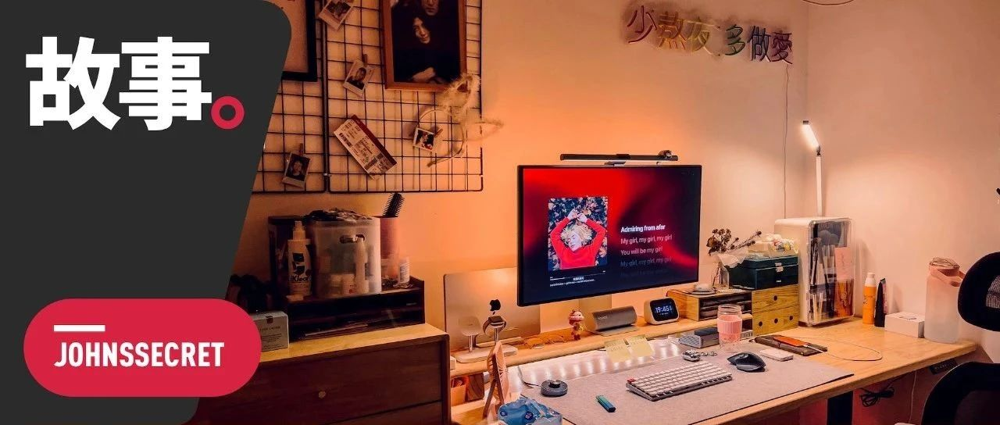

2023 自我介绍：毕业四年，写公众号七年，存款负一万
原创
宛潼
约翰斯库
2023年01月14日 00:25
广东
好久不见。不知道为什么这么说，可能是上一次写公众号还是疫情时代，而现在除了还要戴口罩之外，基本回归到了 2019 年的样子。总之好久不见。
其实 1 月 6 号是这个公众号诞生 7 年的日子，我当时一直想着要不要发点什么。当时硬挤了两千多字多字出来，结果通读一遍后让我觉得无聊至极，直接就删掉了。
告诉你一个小秘密，我写东西的软件叫 Ulysses，它会帮我保留一切写过的内容，但那篇文章却被我无情地丢尽了废纸篓直接粉碎，足以看出我对那些废话的厌恶。
工作台上的干花。
但我真没想过写公众号这事情我居然干了 7 年，而且能 7 年持续性地干得这么烂。很多商业分析都说 2016 年是微信公众号爆发的元年，走出了不少如今百万粉丝的专业传媒公司。
可我呢，写了 7 年，粉丝不过 2000 多，找我投广告无异于肉包子打狗。
不少商业大佬都和我说过，你得做垂直细分，找到你要深耕的领域去研究打法和用户喜好，这样就能快速累积粉丝 —— 我懂，这些道理我都懂。真的。好歹也是在营销和传媒行业呆过的人，深刻的东西一无所知，这种大道理还是学了不少。
可他妈不是所有人只会对一种东西感兴趣啊。
从小我在父母的五金店里长大，莫名其妙地在小学三四年级的时候学透了初中物理的电学知识；初三被科学老师特批可以不用上课去搞比赛，结果有一次生物测试因为把「原尿」写成「尿尿」考了个 99 分。一直到高中，身边的所有人都觉得我都会走理科那条路，却没想到我在填志愿时冷不丁地给父母甩了句：
这是我的真心话。小学二年级的时候报了个国画班，可最终因为只有两个学生报名而没开成，进而被国画老师建议先去学书法，一学就是十多年。但不管学什么，心里一直是惦记着画画这件事，直到高中分班。
记得当时我们吵了好久，最后我妈的一句话让我动摇乃至放弃了。
你爸昨晚哭着和我说，学美术一年好几万，我们真的得砸锅卖铁才能供你读。
我说，好，那算了，但我真不想读理科。文学和艺术多少沾点边，让我去读文科吧。于是最后，我妈终于在分科同意书上签了字。
好多年后，我已经在广州开始工作了，有一回过年回家我妈又和我说起来当时高中文理分科这件事。她说，你知道不，之前你大姨一家人来我们家玩，聊到你的时候你爸说，早知道当年可能应该供你去学美术，再不济读书法专业都肯定能考个重本，学费没这么贵，现在工作的工资肯定高一点。
我只说了一个字，哦。
不过我觉得我的审美还行。
我也不知道什么梦想不梦想的，只觉得从小长大到现在，我感觉喜欢过好多东西。以前家里最多的书是科学解谜和世界通史，还有几本忘了叫啥但是讲的是绘画历史和手绘漫画入门的书。
但最终，我沿着自己当初的路子走了下去，从高中毕业后去了汉语言文学专业。因为比起我爸坚持让我报商科、经济和法律来说，我觉得读这些玩意会让我直接浪费掉四年的时光，而且我深知当时自己的成绩报这些专业也属于自不量力，还不如选个自己可能会喜欢的吧。
只不过大学里的汉语言文学并不是我想的那样。我当时不知道如何去表达这种怪事，直到去年被一位在 Tinder 认识的北大朋友一句话点明了：
很多事情就这么通顺了起来。大学里真正与「文学创作」有直接相关的课，就只剩下了大一上学期的校园写作，后来我觉得语言学真的不是我的菜，就想着要不找个地方去写作吧，写点自己的东西。这个机缘巧合和当时受到姜思达那批人的影响，约翰斯库就这么诞生了。
谁在开始做公众媒体的时候没有想过一夜暴富的梦呢，我当时也是，于是写了一堆很烂的东西。但巧合的是这个公众号开没多久，我迎来了人生第一次性别觉醒，随之而来的是严重的抑郁。
所以某种程度来说，这个公众号在早期挽救过一个因为极度性别焦虑而抑郁的小孩，这同样也是我从没想到的。
经过这么一个坎之后我明白了，什么狗屁爆款文章，我就得写我自己。慢慢地接触的人多了，发现写一些有趣的故事也很不错，比如那位不惧和
学生谈性的物理老师
、
北京深夜胡同的网友
和
后海约炮失败经历
，还有
在海南打工的尼飞老师
—— 哦这篇是转载的。
讲真，2022 年在做内容上其实真的成熟了很多，在 WhatYouNeed 的另个月着实让我突飞猛进。虽然我离「火」这个词还很远，但有时候朋友给我说在哪哪些个群里看到有人转发了我的文章，我的虚荣心还是会得到巨大的满足。
其中有很多都是上海的朋友。
渐渐地，我这种水平的人竟然也能被人来请教了。
我说，我真没什么能教给你的，如果你真的想开始写作，那就先动笔了再说吧，边写边学，做好几年都是石沉大海的准备。但如果你是要问我怎样深耕垂直领域，怎样能最快靠写作赚到钱，那我无能为力。你见过一个写了 7 年，各种平台粉丝加起来有一万多但依旧存款为 0，而且还欠着银行一万多的这么惨兮兮的大佬吗？
在好几个快要交不起房租的晚上，我觉得我自己混得实在太差了。
但即便是这样，依旧有人会和我聊说，啊，我好想辞职啊，你的生活我的梦。我现在也懒得劝了，只会说，那就辞职吧，然后你就会跟我一样，穷困潦倒，但快乐 —— 当然这个前提是你得找到自己喜欢的事情做。
自由撰稿人的生活没有想象的这么简单。我习惯工作的时间是下午两点吃完肯德基 10 块钱的下午茶当午饭之后，磨蹭到三点多才开始工作。大概到七点半左右楼下大众自选开始打 7.8 折之后，再去打包个晚饭，吃完再磨蹭到 8 点半或快 9 点，继续坐在电脑前工作。不忙的话会到 11 点左右，要是忙都直接到凌晨。
但纯粹靠打字赚来的钱真的不多。所以有时候偶尔有客户投一些设计或建站的单子过来，我就能多赚一点点。
而且我发现，自由职业的我也越来越不爱社交了，甚至记不清上一次化妆是什么时候。也正是因为没有社交需求和没钱，也渐渐不再有购买衣服或化妆品的欲望，连护肤也简单到隔一天拿洗面奶洗个脸。
所以忽然间我又学会了怎样劝人别轻易辞职了：想要体验失控般的生活和蓬头垢面的样子，以及快乐和焦虑随时切换的状态吗？跟我一样裸辞做自由职业者就行。
《不干了》。
可有意思的是，Tinder 网友的一个回复让我一下慌了手脚。
你这说的完全是上班的生活。我虽然上班，生活照样失控，为了多睡十分钟根本懒得化妆，还要面临办公室政治、性骚扰等风险。而且你至少快乐，我们是在焦虑和更焦虑之间切换。
我一下无法反驳，毕竟过去的三年大家都压抑到扭曲了。想了想最后只能无奈地说，至少你们不用担心吃了这顿不知道下顿在哪吧。
后面我深刻反思了一下，我穷困潦倒可能也和我喜欢玩有深刻关系。
我总是喜欢去一些陌生的地方待一段时间，然后用 Tinder 去认识些奇奇怪怪的人，接着把大量时间花在和他们聊女性主义、社会生活、政治性抑郁、审美理论、小众音乐人、生活条件改造等等毫无赚钱意义的话题上。
但我还就真不信这个邪，我觉得我能靠科技数码之外的稿子过活，因为我不但喜欢玩手机电脑，也喜欢观察人类，更想要为各种不平等的事情发声。虽然我的 2022 年过得稀烂而且被封一个半月结果年底一样感染新冠，但我开始尝试给全新领域的公众号《别的女孩》写稿了。虽然一开始被很多读者骂，但我觉得这已经足以证明我可以做到。
所以在昨天洗澡的时候，我发了这么一条朋友圈：今年的目标是做点对得住「创作」的东西。
所以你知道为什么叫「约翰斯库」了吗？
我觉得生活不用去聊盼头这种虚无的东西，别老去参考一小部分人的生活。
很多事情就是那么乱着，很多事情就算坚持 7 年其实也就那样，回过头来也没有太多值得夸赞的地方。我觉得我已经成功接纳了自己就是普通人一个，所以与内心的落差就逐渐变小了。
总的来说，我还是想继续尝试在 2023 年不上班，但会更努力工作，不被掣肘地做点对得住创作的东西。
所以，当我花了一下午的时间给 2023 年的公众号做新排版的时候，我真的得蛮开心的。新年新气象，最后，感谢你看完我 2023 年的第一篇文章，新年快乐。
修改于